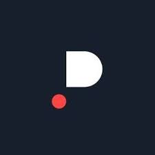

My Resume
My professional journey reflects my passion for software and my commitment to lifelong
learning.
Every project I've been involved in has been an opportunity to grow, learn, and make an impact.
To see my work experience in detail:
-
Work Experience
-
ING Spain
Senior Software Engineer
2022 - Present
Developing backend services using Java 17 and Spring Boot, deploying services in Openshift using Azure Devops.
Implementation of a microservice project from scratch for reconciling Bizum payments in e-commerce and subscription payments to platforms.
Use of Dbass for platform data storage.
Use of AWS S3 for Storage. Implementation of Kafka client and Kafka services in microservices architecture for events.
Use of hexagonal architecture for project development.
Deployments with Azure, with continuous integration pipeline executions to ensure project quality (code smell, bugs, coverage, etc). Use of Azure Devops suite.
Coverage testing with JUnit.
-

Paradigma Digital
Senior Software Developer | Mercadona
2021 - 2022
Implementation of a project from scratch for a map management platform with the goal of store distribution setup both internally and building location.
Backend developed in Java 11, implementing REST API microservices with Spring Boot. Implementing Swagger for Endpoint exposure.
Senior Software Developer | Inditex
2020 - 2021
Implementation of a project built from scratch for an article search engine for Inditex based on the SolR search engine. Implementation in Java 8 and SpringBoot
Senior Software Developer | Pelayo Seguros
2020 - 2020
Implementation of a chatbot in DialogFlow with a backend architecture based on Node.js.
Senior Software Developer | El Corte Inglés
2019 - 2020
Project for the development and migration of search engines based on SolR, migrated to ElasticSearch, in Java.
-

NTT Data
Solution analyst. | Portal de Transparencia de la administración general del estado
2018 - 2019
Team management, organization, and coordination. Effort estimation.
Identifying new requirements, analyzing new customer needs for the implementation of new features in the Government Transparency Portal.
Solution analyst. | Punto de acceso general de la administración pública
2017 - 2018
Full stack development in JAVA, JavaScript, JSP, jQuery.
Content management development using the Freemarker Java Template Engine programming language for the maintenance of the electronic administrations portal.
Solution Assistant | Portal de la administración electrónica
2016 - 2017
Creation of web portals using the Magnolia CMS content management system and development of the own tool using the FreeMarker Java Template Engine language: portals such as Cl@ve, Transparency Council, General Access Point, etc.